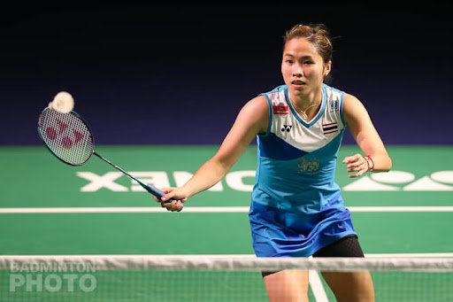
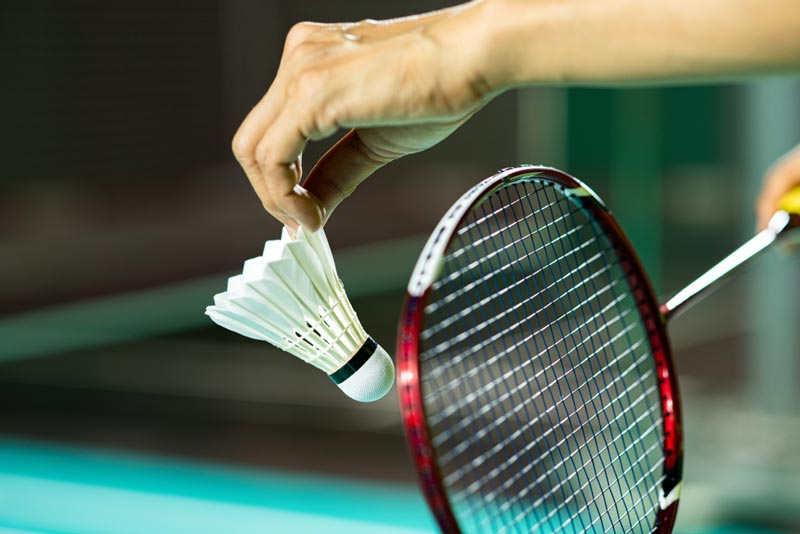

แบดมินตัน (badminton)🎾 เป็นกีฬาชนิดหนึ่ง ที่ใช้ไม้ตีลูก
ลูกสำหรับใช้ตีนั้น เรียกกันมาช้านานว่า "ลูกขนไก่" เพราะสมัยก่อนกีฬานี้ใช้ขนของไก่มาติดกับลูกบอลทรงกลมขนาดเล็ก
ปัจจุบันลูกขนไก่ผลิตจากขนเป็ดที่คัดแล้ว ลูกบอลทรงกลมขนาดเล็กที่ทำเป็นหัวลูกขนไก่ทำด้วยไม้คอร์ก


วิธีการเล่น
กีฬาแบดมินตันจะแบ่งผู้เล่นออกเป็น 2 ฝ่าย และแบ่งการเล่นออกเป็น 2 ประเภท คือ "ประเภทเดี่ยว"
แบ่งผู้เล่นออกเป็นฝ่ายละ 1 คน "ประเภททีม" แบ่งผู้เล่นออกเป็นฝ่ายละ 2 คน
วิธีการนับคะแนน
- ต้องชนะให้ได้มากที่สุดใน 3 เกม
- ทุกประเภทของการแข่งขัน ฝ่ายที่ได้ 21 คะแนนก่อนเป็นฝ่ายชนะในเกมนั้น ยกเว้นเมื่อได้ 20
คะแนนเท่ากันต้องนับต่อให้มีคะแนนห่างกัน 2 คะแนน ฝ่ายใดได้คะแนนนำ 2 คะแนนก่อนเป็นผู้ชนะ
แต่ไม่เกิน 30 คะแนน หมายความว่าหากการเล่นดำเนินมาจนถึง 29 คะแนนเท่ากัน ฝ่ายใดได้ 30 คะแนนก่อน เป็นผู้ชนะ
- ฝ่ายชนะเป็นฝ่ายเสิร์ฟในเกม นัดต่อไป
- ฝ่ายชนะเป็นฝ่ายส่งลูกได้ก่อน หากฝ่ายตรงข้ามทำลูก "เสีย" หรือลูกไม่ได้อยู่ในการเล่น
ผู้เลือกส่งลูกก่อนจะได้คะแนนนำ 1-0 และได้ส่งลูกต่อ แต่หากผู้ส่งลูกทำลูก "เสีย"
หรือลูกไม่อยู่ในการเล่น ฝ่ายตรงข้ามจะได้คะแนนตามมาทันทีเป็น 1-1 และฝ่ายตรงข้ามจะได้สิทธิ์ส่งลูกแทน ดำเนินเช่นนี้ต่อไปจนจบเกม
- ประเภทคู่ให้ส่งลูกฝ่ายละ 1 ครั้ง ตามคะแนนที่ได้ ขณะที่เปลี่ยนฝ่ายส่งลูก หากคะแนนเป็นจำนวนคี่
ผู้อยู่คอร์ดด้านซ้ายเป็นผู้ส่งลูก หากคะแนนเป็นจำนวนคู่ผู้อยู่คอร์ดด้านขวาเป็นฝ่ายส่งลูก
ลายละเอียดเพิ่มเติม>>